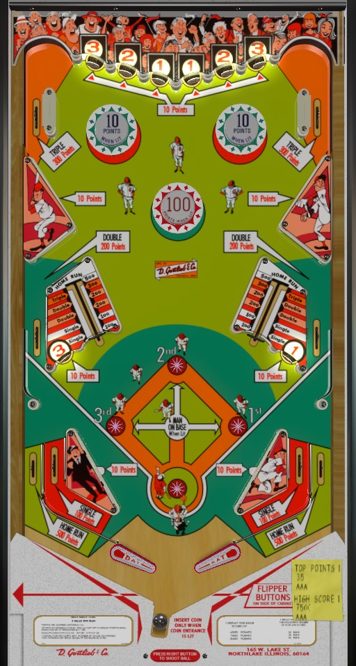

Playball is the replay version. Home Run is the add-a-ball version. The only differences between the two are that all pinball scoring on Home Run is multiplied by 10 compared to Playball, and on Home Run, benchmark scores award extra balls instead of free games.
These games contain both conventional pinball points and a counter for baseball runs. This guide focuses mostly on how to earn pinball points.
If the return feed from a full shot to a vary-target is safe, shoot them all day for 500 points and a home run on each shot. If the return is not safe or if a missed shot leads to a center or outlane drain too often, focus on sending the ball to the top corners of the table, trying to score 300 points and a triple from the upper side lanes.
"Runners" consisting of lit star rollovers advance around the bases, from 1st to 2nd to 3rd base, when various playfield features are triggered. Advancing a runner past 3rd base brings them home and removes them from the field, which scores one baseball run. Baseball runs are not inherently worth pinball points, but replays (on Playball) or extra balls (on Home Run) can be awarded for collecting enough runs, and the feature that prompted the runner to advance usually scores pinball points in its own right.
A "single" advances all runners 1 position, then puts a runner on 1st base. A "double" advances all runners 2 positions, then puts a runner on 2nd base. A "triple" advances all runners 3 positions, then puts a runner on 3rd base. A "home run" scores 1 baseball run for each runner that was on 1st, 2nd, or 3rd base, plus one additional run; the three bases are always empty after a home run. Hitting a standup target labelled 1, 2, or 3 will instantly put a runner on 1st, 2nd, or 3rd base respectively, but does not advance any other runners that may have been on base.
Playball does not have a standard plunger rod or shooter lane; instead, a ball that is out simply resets in a kicker between and below the flippers. To start a ball, simply press the right flipper button, and the ball will be launched upward between the flippers and onto the playfield. There is no skill shot to be had or time limit for starting a ball; just fire when ready.
The six standup targets at the top of the table all score 10 points. They are labelled 3-2-1-1-2-3 from left to right, putting a runner on the respective base when lit. These targets do not advance any other runners.
The upper left and right side lanes score a baseball triple and 300 pinball points. Finding and reliably hitting this shot can be very important to a good score.
Green pop bumpers score 10 points when lit, and rhe red pop bumper scores 100 when lit. They are usually on all the time; sometimes they start unlit, and I'm not sure exactly what lights them. All they do is put the ball out of control, though, so don't aim for them directly and don't rely on them for scoring.
Vary-targets can be pushed in to any of 6 levels. The first two levels score 100 points and a single; the next two score 200 points and a double; the 5th scores 300 points and a triple; a full shot scores 500 points and a home run. If you shoot the vary-target and the ball is send back to a flipper nicely, this should be your go-to strategy. If the return feed is too fast or goes down the middle, avoid the vary-targets and go for the 300 lanes in the top corners.
To the outside of the vary-targets are middle side lanes that score 200 points and a double. The bumpers kick the ball into these lanes from above somewhat frequently. Trying to shoot them directly from below with the flippers is both very difficult and not advised. Take note of the return feed out of these lanes as well; depending on ball speed and table angle, a ball coming out of these lanes may exit into the in lanes, the top of the slingshots, the flippers, or even the center drain.
Playball has a conventional in/out lane setup. In lanes score a single and 100 points. Out lanes score a home run and 500 points. Slingshots score 10 points. Full size 3 inch flippers are used (for the first time ever in a Gottlieb game!).
There is no end of ball bonus, and there are no playfield extra balls or specials. Replay scores are available at various levels of both pinball points and baseball runs; these "replay scores" each award one extra ball on Home Run instead of one free game as on Playball, so Home Run tends to have more benchmark scores and at lower values.
On Playball, tilt ends game. On Home Run, a tilt disqualifies the current ball and subtracts one ball from the Balls to Play counter.
All pinball scoring on Home Run is 10x as much as on Playball. Strategy is not affected.